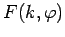
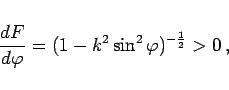
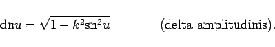

Aus der Darstellung (8.22a) für das elliptische Integral 1. Gattung  folgt für 0<k<1
|  | (14.101) |
d.h., ist bezüglich  streng monoton, so daß die zu
streng monoton, so daß die zu
inverse Funktion
existiert. Sie wird als Amplitudenfunktion bezeichnet. Mit ihrer Hilfe werden die sogenannten JACOBIschen Funktionen wie folgt definiert:
|  | (14.103c) |